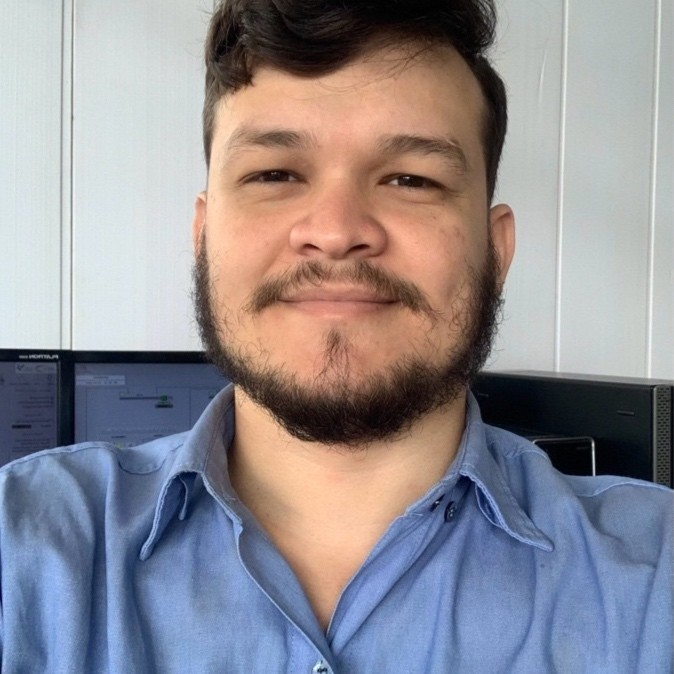

Sobre mim
Olá, Meu nome é David Cosmo da Silva, Sou um estudante de programação, estou Cursando Superior de Tecnologia em Análise e Desenvolvimento de Sistemas. Sou muito apaixonado por tecnologia, Enquanto tentava encontrar a minha autenticidade e minha própria abordagem no ramo da programação, tornei-me mais interessado na vida de um desenvolvedor. Eu me vejo muito em ser um desenvolvedor, então essa é a minha principal fonte de inspiração. Então Vamos ao que interessa! Um pouco dos meus conhecimentos e experiências: Tenho Experiência em Sistemas Operacionais, Conhecimentos em lógica de programação, desenvolvimento front-end como também tenho um pouco de experiência em desenvolvimento Web, HTML, CSS, JavaScript e ReactJS. Não sou um expert, ainda! Mas estou caminhando para me tornar um profissional Fullstack, Amo aprender, expandir meus horizontes e estou aberto a pensar diferente, estou muito empenhado em me tornar um grande profissional de desenvolvimento.
